All10 active concepts and13 icon concepts approved. All20 character/VFX components and all13 production icons are APPROVED,2026-10-31. Gameplay implementation remains pending.
Open interactive Phaser art preview · Complete report · Frame observations · Final checks
Presentation-only triggers. No server connection, damage, cost, cooldown, targeting or loadout implementation. Visual assets verified in preview; gameplay implementation pending.
| Canonical ID / name | Approved direction | Character animation | VFX | Icon | Export / Phaser | Gameplay / final approval |
|---|---|---|---|---|---|---|
luong_nghi_thuLưỡng Nghi Thủ | Approved concept | New skill clips | Activation/state/stages atlas | 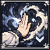 | Exported / Live Phaser Verification PASS | Gameplay pending Final art approved |
huyen_am_chuongHuyền Âm Chưởng | Approved concept | New skill clips | Activation/state/stages atlas | 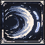 | Exported / Live Phaser Verification PASS | Gameplay pending Final art approved |
duong_khi_kichDương Khí Kích | Approved concept | New skill clips; declared approved-frame reuse | Activation/state/stages atlas | 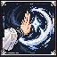 | Exported / Live Phaser Verification PASS | Gameplay pending Final art approved |
thai_cuc_than_congThái Cực Thần Công | Approved concept | New skill clips; declared approved-frame reuse | Activation/state/stages atlas | 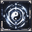 | Exported / Live Phaser Verification PASS | Gameplay pending Final art approved |
thai_cuc_tranThái Cực Trận | Approved concept | New skill clips | Activation/state/stages atlas | 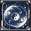 | Exported / Live Phaser Verification PASS | Gameplay pending Final art approved |
that_tinh_kiemThất Tinh Kiếm | Approved concept | New skill clips | Activation/state/stages atlas | 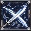 | Exported / Live Phaser Verification PASS | Gameplay pending Final art approved |
nhan_kiem_hop_nhatNhân Kiếm Hợp Nhất | Approved concept | New skill clips; declared approved-frame reuse | Activation/state/stages atlas | 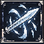 | Exported / Live Phaser Verification PASS | Gameplay pending Final art approved |
bat_quai_kiem_tranBát Quái Kiếm Trận | Approved concept | New skill clips | Activation/state/stages atlas | 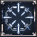 | Exported / Live Phaser Verification PASS | Gameplay pending Final art approved |
toa_sat_bac_doTọa Sát Bác Đồ | Approved concept | New skill clips; declared approved-frame reuse | Activation/state/stages atlas | 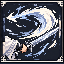 | Exported / Live Phaser Verification PASS | Gameplay pending Final art approved |
van_kiem_quy_tongVạn Kiếm Quy Tông | Approved concept | New skill clips; declared approved-frame reuse | Activation/state/stages atlas | 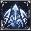 | Exported / Live Phaser Verification PASS | Gameplay pending Final art approved |
vo_dang_quyenVõ Đang Quyền | Approved concept | Reuse approved normal attack, unchanged | Not applicable; no extra effect | 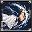 | Exported / Live Phaser Verification PASS | Gameplay pending Final art approved |
vo_dang_kiemVõ Đang Kiếm | Approved concept | Reuse approved normal attack, unchanged | Shared straight qi; optional preview only | 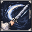 | Exported / Live Phaser Verification PASS | Gameplay pending Final art approved |
thai_cuc_tam_phapThái Cực Tâm Pháp | Icon-only concept | Not applicable — passive icon only | Not applicable; no extra effect | 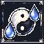 | Exported / Live Phaser Verification PASS | Gameplay pending Final art approved |
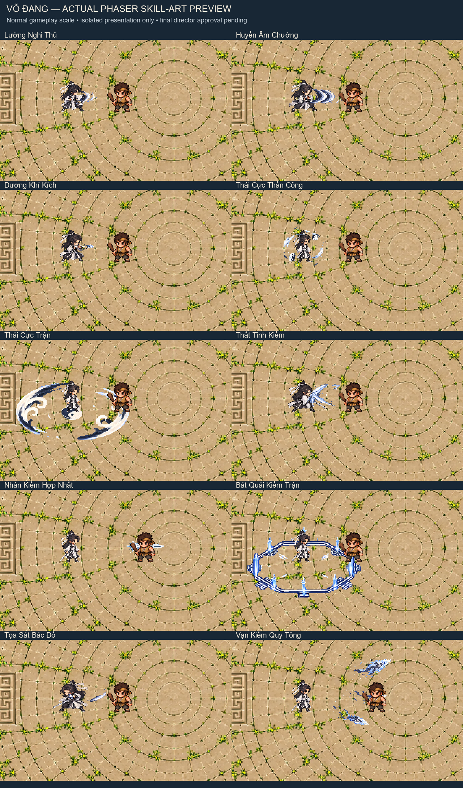
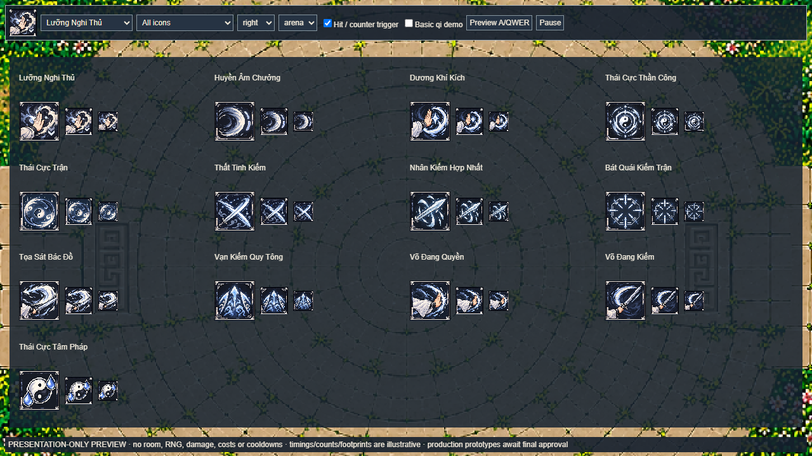